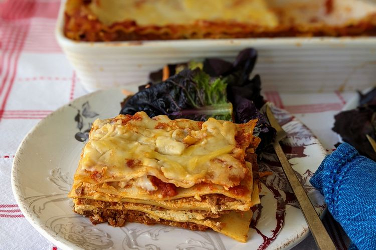

Lasagna
Home

Description
Lasagna is a type of pasta, possibly one of the oldest types, made of very wide, flat sheets.
Either term can also refer to an Italian dish made of stacked layers of lasagna alternating with fillings
such as ragù, béchamel sauce, vegetables, cheeses, and seasonings and spices.
Ingredients
- 1 pound ground beef
- 1 pound sweet Italian sausage
- 1/2 cup minced onion
- 2 cloves garlic, crushed
- 1 (28 ounce) can crushed tomatoes
- 2 (6 ounce) cans tomato paste
- 2 (6.5 ounce) cans canned tomato sauce
- 1/2 cup water
- 2 tablespoons white sugar
- 1 1/2 teaspoons dried basil leaves
- 1/2 teaspoon fennel seeds
- 1 teaspoon Italian seasoning
Steps
- Make the meat sauce.
- Cook the noodles.
- Make the ricotta mixture.
- Layer the lasagna according to the recipe instructions.